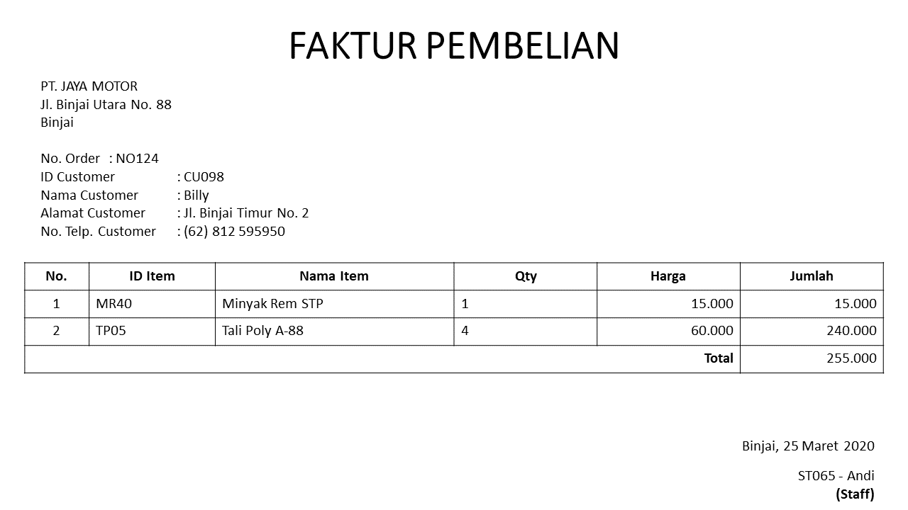
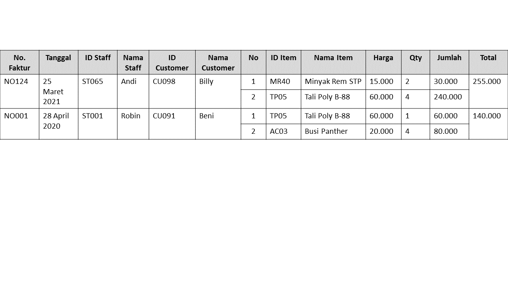
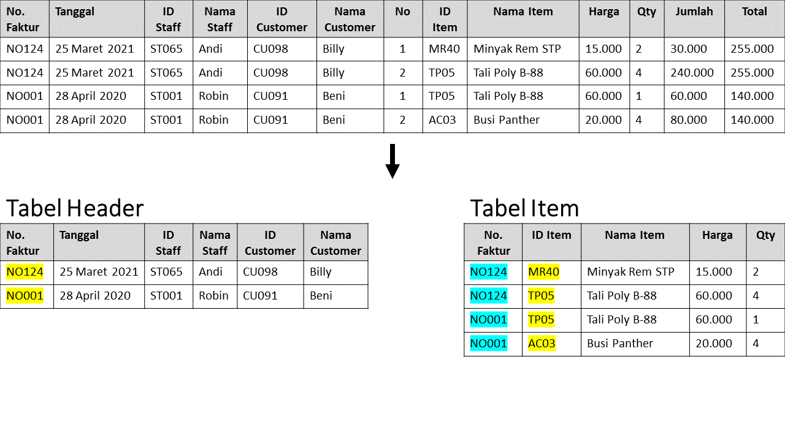
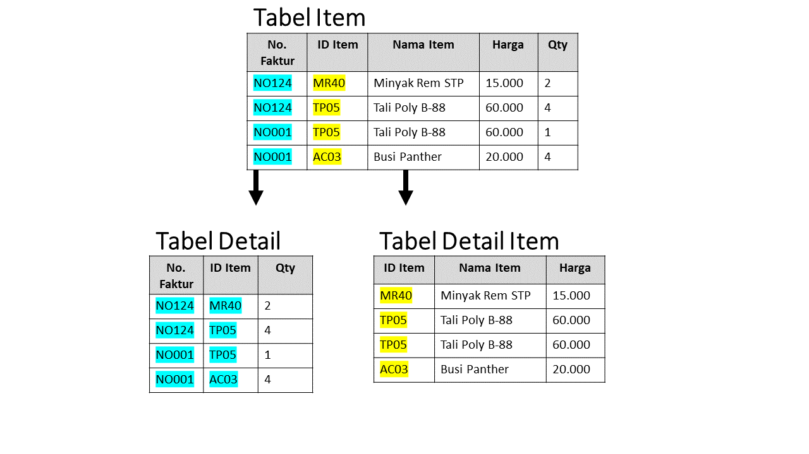
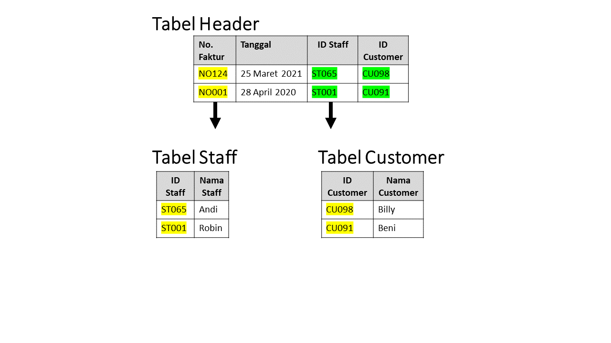

Normalisasi merupakan salah satu teknik untuk mendesain relational database agar dapat menghilangkan anomali data dan redudansi data yang dilakukan dengan mengelompokkan entitas dan atribut menjadi satu relasi. Biasanya database yang bisa dilakukan normalisasi adalah relational database.
Ada beberapa bentuk normalisasi yaitu UNF, 1NF, 2NF, 3NF, BCNF, 4NF. 5NF, dan 6NF. Pada bentuk normalisasi 1NF, 2NF, dan 3NF
merupakan normalisasi yang paling umum dipakai untuk dapat membuat sebuah database yang berkualitas baik.
Tujuan dari normalisasi itu sendiri adalah untuk dapat mengurangi ataupun menghilangkan anomali dan redudansi data sehingga semua data yang akan digunakan berada pada tabel yang
tepat / dependensi data.
Ada 3 kemungkinan yang akan terjadi jika tidak dilakukan normalisasi yaitu :
- Anomali insert – akan terjadi ketika data yang dimasukkan tidak sinkron dengan data yang ada di database.
- Anomali update – akan terjadi ketika ada data yang diupdate pada satu tabel, tetapi data tersebut yang ada
di tabel lain tidak akan ter-update sehingga menyebabkan data menjadi tidak konsisten.
- Anomali delete – akan terjadi ketika ada data yang akan dihapus pada s atu tabel, namun data tersebut yang ada
di tabel lain tidak akan terhapus sehingga menyebabkan terjadinya inkonsistensi data.
Kasus
Berikut adalah contoh faktur pembelian dalam sebuah toko sparepart.

Tahapan Normalisasi
1. UNF / Unnormalized Form / Bentuk Tidak Normal
Bentuk ini dilakukan dengan mengumpulkan semua data yang terekam dan dalam membuat UNF tidak ada syarat-syarat tertentu yang harus diikuti.
Biasanya pada bentuk tidak normal terdapat kumpulan data redundan yang dapat menyebabkan anomali data. Dari contoh kasus sebelumnya, maka UNF pada
kasus ini adalah dengan mengumpulkan semua data yang ada di faktur pembelian, dengan contoh hasil sebagai berikut.

2. 1NF / First Normal Form
Pada bentuk 1NF akan mengelompokkan data yang sejenis sehingga anomali data sebelumnya pada UNF dapat teratasi.
Ada beberapa syarat yang harus diikuti :
- Memisahkan data yang redundan dari tabel yang sama.
- Membuat tabel terpisah sesuai dengan kelompok data yang terkait dan menentukan atribut unik (primary key).
- Menghilangkan kalkulasi.
Sesuai dengan ketentuan sebelumnya, maka tabel UNF kemudian akan dibagi per baris lalu membuat sebuah tabel baru untuk
menghilangkan data yang redundan sehingga memberikan hasil sebagai berikut.

Terdapat 2 tabel yaitu tabel header dan tabel Item. Pada tabel Header, atribut No.
Faktur dijadikan sebagai primary key agar dapat dihubungkan dengan tabel Item. Pada tabel
Item, No. Faktur dijadikan sebagai composite key (Primary Key Foreign Key) dan ID Item
dijadikan sebagai primary key karena tiap nomor faktur berisi item yang berbeda-beda.
3. 2NF / Second Normal Form
Syarat pada 2NF yaitu :
- Menghapus redudansi parsial dimana memiliki atribut yang hanya bergantung pada 1 primary key.
- Mengidentifikasi foreign key untuk menghubungkan tabel lama dengan tabel baru.
Pada bentuk 2NF, karena tabel Item memiliki lebih dari 1 atribut unik dan atribut nama item, harga hanya bergantung kepada ID Item,
maka atribut tersebut kemudian dipisah menjadi sebuah tabel baru dengan hasil sebagai berikut.

Pada tabel Detail, No. Faktur dan ID Item dijadikan sebagai composite key (PK FK) karena No. Faktur bergantung dengan No. Faktur pada tabel Header,
sedangkan ID Item bergantung pada tabel Detail Item sehngga pada tabel Detail Item, ID Item dijadikan sebagai primary key.
4. 3NF / Third Normal Form
Pada bentuk 3NF, dalam sebuah tabel tidak diperbolehkan adanya partial transitive dependency.
Transitive dependency merupakan sebuah kondisi suatu atribut bergantung pada atribut lain namun
atribut tersebut bukan termasuk primary key sehingga perlu dipisah menjadi tabel baru, contohnya
terdapat 3 atribut A, B, dan C dimana A -> B dan B -> C sehingga C dapat dikatakan sebagai transitive
dependency terhadap A melalui B.
Pada 3NF, terdapat transitive dependency dimana Nama Staff hanya bergantung pada ID Staff dan Nama Customer hanya bergantung
pada ID Customer, maka kedua atribut tersebut dipisah menjadi tabel baru dengan hasil sebagai berikut.

Pada tabel header, ID Staff dan ID Customer merupakan foreign key karena bergantung pada tabel Staff dan tabel Customer.